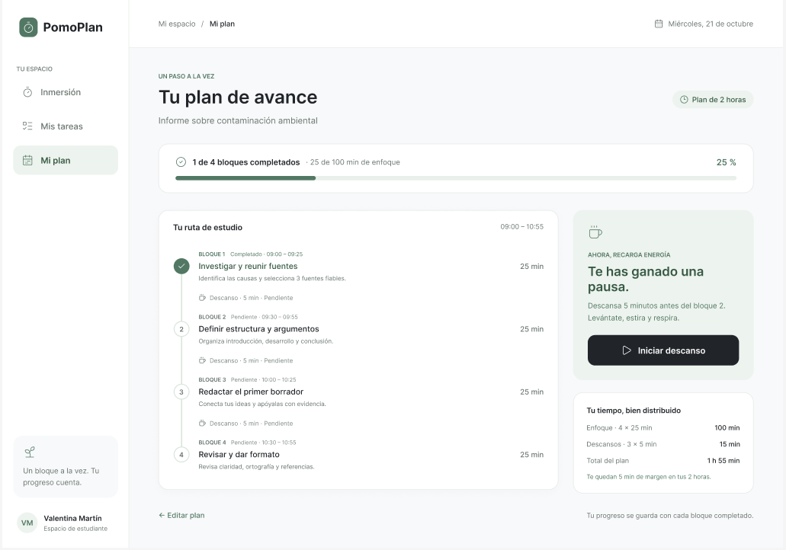
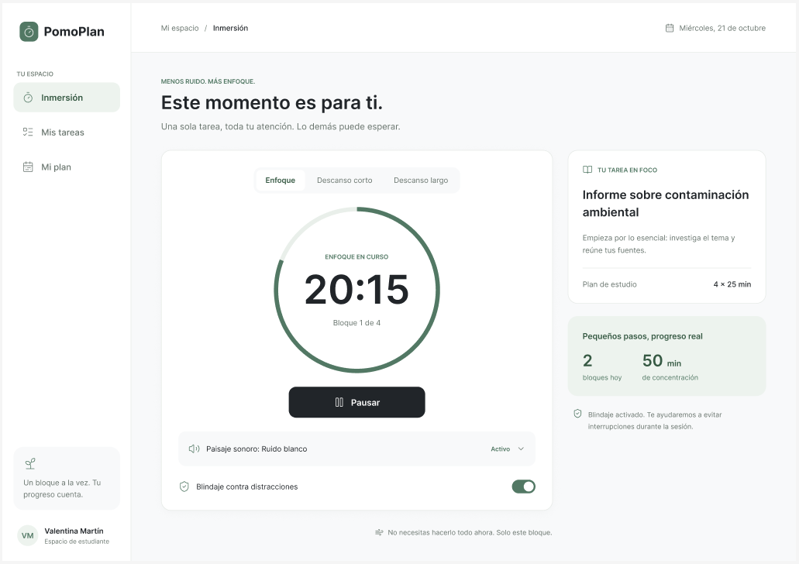
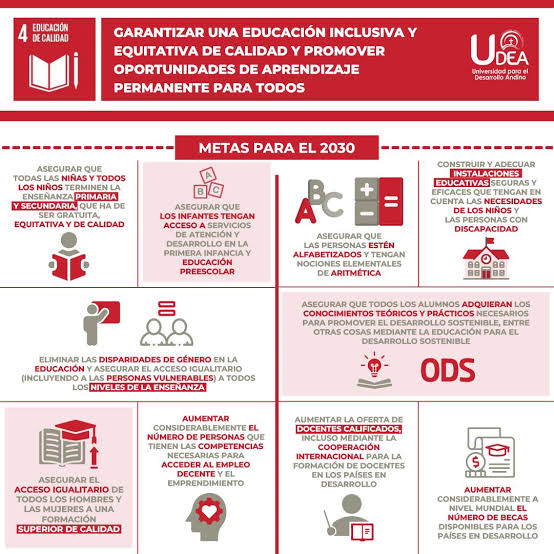

Divide tu tarea
Selecciona una actividad, elige tu intensidad (25 o 50 min) y transfiere el bloque al temporizador.
Probar planificadorODS 4 · Educación de calidad
PomoPlan es una propuesta para estudiantes universitarios que quieren dividir entregas extensas, aislarse del ruido con paisajes sonoros locales y evitar perder tareas por error.
Demostración educativa de interfaz. Procesamiento 100% local en tu navegador.


Nuestra propuesta
La sobrecarga académica, el ruido ambiental y las interrupciones digitales fragmentan la atención. PomoPlan combina micro-bloques planificados con aislamiento acústico local y avisos no intrusivos.
El proyecto se relaciona con el ODS 4: Educación de calidad al explorar herramientas accesibles que faciliten la concentración profunda.
Explora el recorrido

Selecciona una actividad, elige tu intensidad (25 o 50 min) y transfiere el bloque al temporizador.
Probar planificadorActiva paisajes sonoros locales, detecta salidas de pestaña sin castigos y controla el foco por voz o gestos.
Probar blindaje
Ensaya eliminar tareas completadas y restaurarlas sin perder la lista de ejemplo.
Probar tareasHU3 & HU5 · Configura tu plan
Selecciona el tipo de actividad, la duración y el bloque con el que deseas comenzar. Al transferir, el temporizador se cargará en pausa y sugerirá un paisaje sonoro acorde a tu intensidad.
Los planes son ejemplos predefinidos: no se generan con IA ni se personalizan automáticamente.
HU1 · Escudo multimodal y blindaje focal
BLOQUE 1 DE 4 · REDACTAR UN INFORME
Sesión cargada en pausa. Confirma cuando quieras comenzar.
Distracciones menores: 0 · Salidas de pestaña: 0
Te quedan 25 minutos en el bloque Leer y comprender la consigna.
Tomar una pausa no planificada puede romper tu estado de flujo. ¿Prefieres continuar o abandonar la sesión?
Al seleccionar "Continuar estudiando", la sesión se reanuda automáticamente.
Confianza y privacidad: el generador de audio (Web Audio API), la detección de pestaña (Page Visibility API) y el reconocimiento de voz se ejecutan localmente en tu navegador. No se transmiten audios ni métricas de concentración a servidores externos.
HU2 · Seguridad al gestionar tareas
Prueba el estado de borrado y usa «Deshacer» para recuperar las tareas de muestra. El aviso permanece visible hasta que lo deshagas.
✓ Leer bibliografía del informe
✓ Organizar referencias académicas
✓ Revisar el esquema del trabajo
Las tareas completadas se quitaron de esta vista.
¿Eliminar las tareas completadas?
Esta acción moverá las tareas a la papelera temporal.
Limitación HU2: el borrado y la recuperación son estados visuales en esta sesión. No existe guardado local ni eliminación real de datos.
Comparte tu opinión
Completa un formulario de prueba para conocer el recorrido de validación HTML. No se envía ni almacena información.